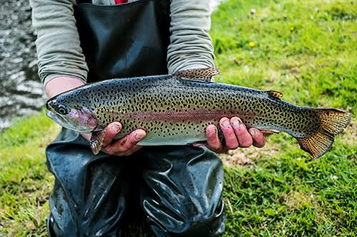

El Lago Titicaca alberga diversas especies de peces, entre las más conocidas se encuentran el carachi, el ispi, el suche y el mauri, que son especies nativas de la región.
También se encuentran especies introducidas como la trucha arcoíris (Oncorhynchus mykiss) y el pejerrey (Odontesthes ), que tienen importancia para la pesca y la alimentación de las comunidades cercanas al lago.